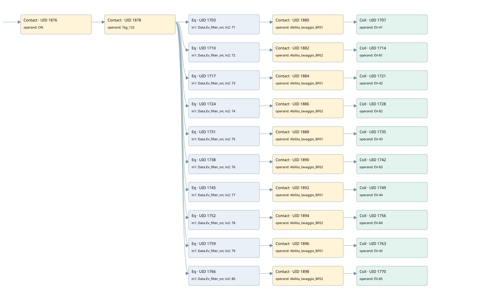

wash filter
filter · 검색 색인 순서 16 · 원본 내부 NID 추정 16
백업 PLF 원본의 2745319 바이트 위치에서 복원한 XML. 검색 문서 1897의 객체 키 161022004211000000000000와 연결했다. 이름 해석 42/42개. 남은 RefId는 상수 또는 미해석 참조다.
연결 구조 다시 그리기
원본 Part/PCon/Wire를 이용한 연결도다. TIA 화면의 래더 배치 또는 실행 결과를 재현한 그림은 아니다. 핀 연결은 아래 표와 원본 XML을 기준으로 읽는다. 노드 위에 마우스를 두면 피연산자 이름을 볼 수 있다.

접점·코일·블록과 피연산자
| Part UID | Gate | Negated 핀 | 연결 피연산자 |
|---|---|---|---|
| 1876 | Contact | operand = ON | |
| 1878 | Contact | operand = Tag_132 | |
| 1703 | Eq | in1 = Data.Ev_filter_on; in2 = 71 | |
| 1880 | Contact | operand = Abilita_lavaggio_BF01 | |
| 1707 | Coil | operand = EV-41 | |
| 1710 | Eq | in1 = Data.Ev_filter_on; in2 = 72 | |
| 1882 | Contact | operand = Abilita_lavaggio_BF02 | |
| 1714 | Coil | operand = EV-81 | |
| 1717 | Eq | in1 = Data.Ev_filter_on; in2 = 73 | |
| 1884 | Contact | operand = Abilita_lavaggio_BF01 | |
| 1721 | Coil | operand = EV-42 | |
| 1724 | Eq | in1 = Data.Ev_filter_on; in2 = 74 | |
| 1886 | Contact | operand = Abilita_lavaggio_BF02 | |
| 1728 | Coil | operand = EV-82 | |
| 1731 | Eq | in1 = Data.Ev_filter_on; in2 = 75 | |
| 1888 | Contact | operand = Abilita_lavaggio_BF01 | |
| 1735 | Coil | operand = EV-43 | |
| 1738 | Eq | in1 = Data.Ev_filter_on; in2 = 76 | |
| 1890 | Contact | operand = Abilita_lavaggio_BF02 | |
| 1742 | Coil | operand = EV-83 | |
| 1745 | Eq | in1 = Data.Ev_filter_on; in2 = 77 | |
| 1892 | Contact | operand = Abilita_lavaggio_BF01 | |
| 1749 | Coil | operand = EV-44 | |
| 1752 | Eq | in1 = Data.Ev_filter_on; in2 = 78 | |
| 1894 | Contact | operand = Abilita_lavaggio_BF02 | |
| 1756 | Coil | operand = EV-84 | |
| 1759 | Eq | in1 = Data.Ev_filter_on; in2 = 79 | |
| 1896 | Contact | operand = Abilita_lavaggio_BF01 | |
| 1763 | Coil | operand = EV-45 | |
| 1766 | Eq | in1 = Data.Ev_filter_on; in2 = 80 | |
| 1898 | Contact | operand = Abilita_lavaggio_BF02 | |
| 1770 | Coil | operand = EV-85 |
접점 경로를 펼친 조건식
Contact·O/A·비교기의 원본 연결을 읽기 쉽게 펼친 보조 해석이다. POWER는 전원 레일 시작을 뜻한다. 호출 블록·에지·타이머의 내부 동작과 다중 쓰기 순서는 이 표로 실행 검증하지 않았다. 미해석 핀과 RefId는 원문 연결표에서 확인한다.
| UID | 동작 | 대상 | 원본 접점 경로 | 내용 |
|---|---|---|---|---|
| 1707 | Coil | EV-41 | (((ON AND Tag_132) AND [Data.Ev_filter_on = 71]) AND Abilita_lavaggio_BF01) | 조건에 따른 Coil 기록 |
| 1714 | Coil | EV-81 | (((ON AND Tag_132) AND [Data.Ev_filter_on = 72]) AND Abilita_lavaggio_BF02) | 조건에 따른 Coil 기록 |
| 1721 | Coil | EV-42 | (((ON AND Tag_132) AND [Data.Ev_filter_on = 73]) AND Abilita_lavaggio_BF01) | 조건에 따른 Coil 기록 |
| 1728 | Coil | EV-82 | (((ON AND Tag_132) AND [Data.Ev_filter_on = 74]) AND Abilita_lavaggio_BF02) | 조건에 따른 Coil 기록 |
| 1735 | Coil | EV-43 | (((ON AND Tag_132) AND [Data.Ev_filter_on = 75]) AND Abilita_lavaggio_BF01) | 조건에 따른 Coil 기록 |
| 1742 | Coil | EV-83 | (((ON AND Tag_132) AND [Data.Ev_filter_on = 76]) AND Abilita_lavaggio_BF02) | 조건에 따른 Coil 기록 |
| 1749 | Coil | EV-44 | (((ON AND Tag_132) AND [Data.Ev_filter_on = 77]) AND Abilita_lavaggio_BF01) | 조건에 따른 Coil 기록 |
| 1756 | Coil | EV-84 | (((ON AND Tag_132) AND [Data.Ev_filter_on = 78]) AND Abilita_lavaggio_BF02) | 조건에 따른 Coil 기록 |
| 1763 | Coil | EV-45 | (((ON AND Tag_132) AND [Data.Ev_filter_on = 79]) AND Abilita_lavaggio_BF01) | 조건에 따른 Coil 기록 |
| 1770 | Coil | EV-85 | (((ON AND Tag_132) AND [Data.Ev_filter_on = 80]) AND Abilita_lavaggio_BF02) | 조건에 따른 Coil 기록 |
원본 배선 연결
| Wire UID | 동일 Wire 연결 끝점 |
|---|---|
| 1900 | Powerrail {} ↔ Part 1876.in |
| 1813 | ORef 1771 (ON) ↔ Part 1876.operand |
| 1877 | Part 1876.out ↔ Part 1878.in |
| 1814 | ORef 1772 (Tag_132) ↔ Part 1878.operand |
| 1879 | Part 1878.out ↔ Part 1703.pre ↔ Part 1710.pre ↔ Part 1717.pre ↔ Part 1724.pre ↔ Part 1731.pre ↔ Part 1738.pre ↔ Part 1745.pre ↔ Part 1752.pre ↔ Part 1759.pre ↔ Part 1766.pre |
| 1815 | ORef 1773 (Data.Ev_filter_on) ↔ Part 1703.in1 |
| 1816 | ORef 1774 (71) ↔ Part 1703.in2 |
| 1817 | Part 1703.out ↔ Part 1880.in |
| 1818 | ORef 1775 (Abilita_lavaggio_BF01) ↔ Part 1880.operand |
| 1881 | Part 1880.out ↔ Part 1707.in |
| 1820 | ORef 1776 (EV-41) ↔ Part 1707.operand |
| 1821 | ORef 1777 (Data.Ev_filter_on) ↔ Part 1710.in1 |
| 1822 | ORef 1778 (72) ↔ Part 1710.in2 |
| 1823 | Part 1710.out ↔ Part 1882.in |
| 1824 | ORef 1779 (Abilita_lavaggio_BF02) ↔ Part 1882.operand |
| 1883 | Part 1882.out ↔ Part 1714.in |
| 1826 | ORef 1780 (EV-81) ↔ Part 1714.operand |
| 1827 | ORef 1781 (Data.Ev_filter_on) ↔ Part 1717.in1 |
| 1828 | ORef 1782 (73) ↔ Part 1717.in2 |
| 1829 | Part 1717.out ↔ Part 1884.in |
| 1830 | ORef 1783 (Abilita_lavaggio_BF01) ↔ Part 1884.operand |
| 1885 | Part 1884.out ↔ Part 1721.in |
| 1832 | ORef 1784 (EV-42) ↔ Part 1721.operand |
| 1833 | ORef 1785 (Data.Ev_filter_on) ↔ Part 1724.in1 |
| 1834 | ORef 1786 (74) ↔ Part 1724.in2 |
| 1835 | Part 1724.out ↔ Part 1886.in |
| 1836 | ORef 1787 (Abilita_lavaggio_BF02) ↔ Part 1886.operand |
| 1887 | Part 1886.out ↔ Part 1728.in |
| 1838 | ORef 1788 (EV-82) ↔ Part 1728.operand |
| 1839 | ORef 1789 (Data.Ev_filter_on) ↔ Part 1731.in1 |
| 1840 | ORef 1790 (75) ↔ Part 1731.in2 |
| 1841 | Part 1731.out ↔ Part 1888.in |
| 1842 | ORef 1791 (Abilita_lavaggio_BF01) ↔ Part 1888.operand |
| 1889 | Part 1888.out ↔ Part 1735.in |
| 1844 | ORef 1792 (EV-43) ↔ Part 1735.operand |
| 1845 | ORef 1793 (Data.Ev_filter_on) ↔ Part 1738.in1 |
| 1846 | ORef 1794 (76) ↔ Part 1738.in2 |
| 1847 | Part 1738.out ↔ Part 1890.in |
| 1848 | ORef 1795 (Abilita_lavaggio_BF02) ↔ Part 1890.operand |
| 1891 | Part 1890.out ↔ Part 1742.in |
| 1850 | ORef 1796 (EV-83) ↔ Part 1742.operand |
| 1851 | ORef 1797 (Data.Ev_filter_on) ↔ Part 1745.in1 |
| 1852 | ORef 1798 (77) ↔ Part 1745.in2 |
| 1853 | Part 1745.out ↔ Part 1892.in |
| 1854 | ORef 1799 (Abilita_lavaggio_BF01) ↔ Part 1892.operand |
| 1893 | Part 1892.out ↔ Part 1749.in |
| 1856 | ORef 1800 (EV-44) ↔ Part 1749.operand |
| 1857 | ORef 1801 (Data.Ev_filter_on) ↔ Part 1752.in1 |
| 1858 | ORef 1802 (78) ↔ Part 1752.in2 |
| 1859 | Part 1752.out ↔ Part 1894.in |
| 1860 | ORef 1803 (Abilita_lavaggio_BF02) ↔ Part 1894.operand |
| 1895 | Part 1894.out ↔ Part 1756.in |
| 1862 | ORef 1804 (EV-84) ↔ Part 1756.operand |
| 1863 | ORef 1805 (Data.Ev_filter_on) ↔ Part 1759.in1 |
| 1864 | ORef 1806 (79) ↔ Part 1759.in2 |
| 1865 | Part 1759.out ↔ Part 1896.in |
| 1866 | ORef 1807 (Abilita_lavaggio_BF01) ↔ Part 1896.operand |
| 1897 | Part 1896.out ↔ Part 1763.in |
| 1868 | ORef 1808 (EV-45) ↔ Part 1763.operand |
| 1869 | ORef 1809 (Data.Ev_filter_on) ↔ Part 1766.in1 |
| 1870 | ORef 1810 (80) ↔ Part 1766.in2 |
| 1871 | Part 1766.out ↔ Part 1898.in |
| 1872 | ORef 1811 (Abilita_lavaggio_BF02) ↔ Part 1898.operand |
| 1899 | Part 1898.out ↔ Part 1770.in |
| 1874 | ORef 1812 (EV-85) ↔ Part 1770.operand |
식별자 해석 근거 42개
| ORef UID | RefId | 이름 | IdentXmlPart 파일 | 해석 방법 |
|---|---|---|---|---|
| 1771 | 52 | ON | 0594-IdentXmlPart.xml | UID/RID + search-text + NID agreement |
| 1772 | 61 | Tag_132 | 0594-IdentXmlPart.xml | UID/RID + search-text + NID agreement |
| 1773 | 3 | Data.Ev_filter_on | 0596-IdentXmlPart.xml | UID/RID + search-text + NID agreement |
| 1774 | 210 | 71 | 0597-IdentXmlPart.xml | literal candidate: UID/RID/NID + nearby named declarations + search-text agreement |
| 1775 | 63 | Abilita_lavaggio_BF01 | 0598-IdentXmlPart.xml | UID/RID + search-text + NID agreement |
| 1776 | 211 | EV-41 | 0594-IdentXmlPart.xml | UID/RID + search-text + NID agreement |
| 1777 | 3 | Data.Ev_filter_on | 0596-IdentXmlPart.xml | UID/RID + search-text + NID agreement |
| 1778 | 212 | 72 | 0597-IdentXmlPart.xml | literal candidate: UID/RID/NID + nearby named declarations + search-text agreement |
| 1779 | 65 | Abilita_lavaggio_BF02 | 0598-IdentXmlPart.xml | UID/RID + search-text + NID agreement |
| 1780 | 213 | EV-81 | 0594-IdentXmlPart.xml | UID/RID + search-text + NID agreement |
| 1781 | 3 | Data.Ev_filter_on | 0596-IdentXmlPart.xml | UID/RID + search-text + NID agreement |
| 1782 | 214 | 73 | 0597-IdentXmlPart.xml | literal candidate: UID/RID/NID + nearby named declarations + search-text agreement |
| 1783 | 63 | Abilita_lavaggio_BF01 | 0598-IdentXmlPart.xml | UID/RID + search-text + NID agreement |
| 1784 | 215 | EV-42 | 0594-IdentXmlPart.xml | UID/RID + search-text + NID agreement |
| 1785 | 3 | Data.Ev_filter_on | 0596-IdentXmlPart.xml | UID/RID + search-text + NID agreement |
| 1786 | 216 | 74 | 0597-IdentXmlPart.xml | literal candidate: UID/RID/NID + nearby named declarations + search-text agreement |
| 1787 | 65 | Abilita_lavaggio_BF02 | 0598-IdentXmlPart.xml | UID/RID + search-text + NID agreement |
| 1788 | 217 | EV-82 | 0594-IdentXmlPart.xml | UID/RID + search-text + NID agreement |
| 1789 | 3 | Data.Ev_filter_on | 0596-IdentXmlPart.xml | UID/RID + search-text + NID agreement |
| 1790 | 218 | 75 | 0597-IdentXmlPart.xml | literal candidate: UID/RID/NID + nearby named declarations + search-text agreement |
| 1791 | 63 | Abilita_lavaggio_BF01 | 0598-IdentXmlPart.xml | UID/RID + search-text + NID agreement |
| 1792 | 219 | EV-43 | 0594-IdentXmlPart.xml | UID/RID + search-text + NID agreement |
| 1793 | 3 | Data.Ev_filter_on | 0596-IdentXmlPart.xml | UID/RID + search-text + NID agreement |
| 1794 | 220 | 76 | 0597-IdentXmlPart.xml | literal candidate: UID/RID/NID + nearby named declarations + search-text agreement |
| 1795 | 65 | Abilita_lavaggio_BF02 | 0598-IdentXmlPart.xml | UID/RID + search-text + NID agreement |
| 1796 | 221 | EV-83 | 0594-IdentXmlPart.xml | UID/RID + search-text + NID agreement |
| 1797 | 3 | Data.Ev_filter_on | 0596-IdentXmlPart.xml | UID/RID + search-text + NID agreement |
| 1798 | 222 | 77 | 0597-IdentXmlPart.xml | literal candidate: UID/RID/NID + nearby named declarations + search-text agreement |
| 1799 | 63 | Abilita_lavaggio_BF01 | 0598-IdentXmlPart.xml | UID/RID + search-text + NID agreement |
| 1800 | 223 | EV-44 | 0594-IdentXmlPart.xml | UID/RID + search-text + NID agreement |
| 1801 | 3 | Data.Ev_filter_on | 0596-IdentXmlPart.xml | UID/RID + search-text + NID agreement |
| 1802 | 224 | 78 | 0597-IdentXmlPart.xml | literal candidate: UID/RID/NID + nearby named declarations + search-text agreement |
| 1803 | 65 | Abilita_lavaggio_BF02 | 0598-IdentXmlPart.xml | UID/RID + search-text + NID agreement |
| 1804 | 225 | EV-84 | 0594-IdentXmlPart.xml | UID/RID + search-text + NID agreement |
| 1805 | 3 | Data.Ev_filter_on | 0596-IdentXmlPart.xml | UID/RID + search-text + NID agreement |
| 1806 | 226 | 79 | 0597-IdentXmlPart.xml | literal candidate: UID/RID/NID + nearby named declarations + search-text agreement |
| 1807 | 63 | Abilita_lavaggio_BF01 | 0598-IdentXmlPart.xml | UID/RID + search-text + NID agreement |
| 1808 | 227 | EV-45 | 0594-IdentXmlPart.xml | UID/RID + search-text + NID agreement |
| 1809 | 3 | Data.Ev_filter_on | 0596-IdentXmlPart.xml | UID/RID + search-text + NID agreement |
| 1810 | 228 | 80 | 0597-IdentXmlPart.xml | literal candidate: UID/RID/NID + nearby named declarations + search-text agreement |
| 1811 | 65 | Abilita_lavaggio_BF02 | 0598-IdentXmlPart.xml | UID/RID + search-text + NID agreement |
| 1812 | 229 | EV-85 | 0594-IdentXmlPart.xml | UID/RID + search-text + NID agreement |
검색 코드 보조 자료
참조 명칭을 찾기 위한 자료이며 실행 순서나 AND/OR 관계는 위 연결표로 확인한다.
"on" "tag_132" "data".ev_filter_on 71 #abilita_lavaggio_bf01 "ev-41" "data".ev_filter_on 72 #abilita_lavaggio_bf02 "ev-81" "data".ev_filter_on 73 #abilita_lavaggio_bf01 "ev-42" "data".ev_filter_on 74 #abilita_lavaggio_bf02 "ev-82" "data".ev_filter_on 75 #abilita_lavaggio_bf01 "ev-43" "data".ev_filter_on 76 #abilita_lavaggio_bf02 "ev-83" "data".ev_filter_on 77 #abilita_lavaggio_bf01 "ev-44" "data".ev_filter_on 78 #abilita_lavaggio_bf02 "ev-84" "data".ev_filter_on 79 #abilita_lavaggio_bf01 "ev-45" "data".ev_filter_on 80 #abilita_lavaggio_bf02 "ev-85"